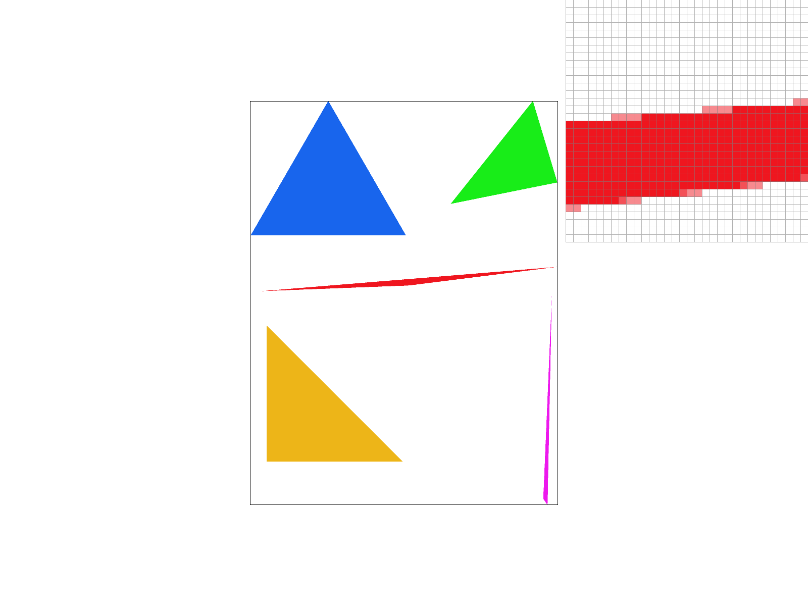
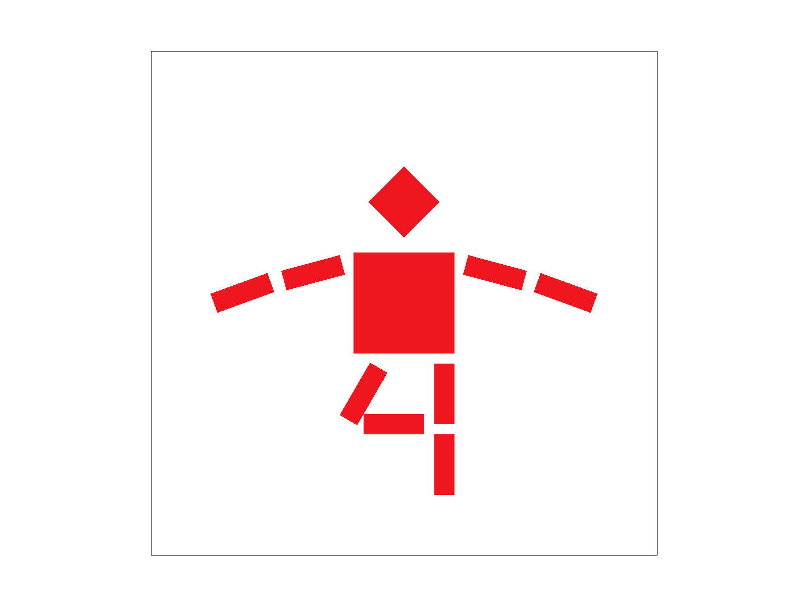
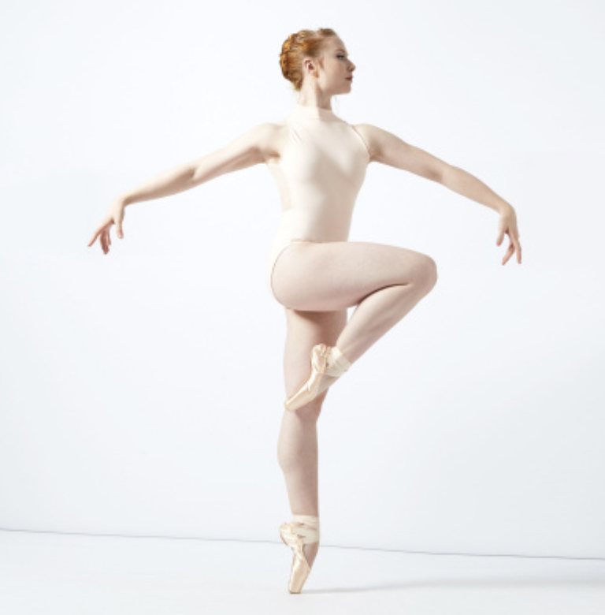

In this first assignment, I get familiar with how the vector format data (e.g. SVG images) is being drawn to the screen. It is superisingly interesting that the underlying representation of SVG images are actually a bunch of triangles with colors or texture maps, similar to the 3D meshes. This assignment helps me to reveal the mystery on why some SVG images can be "infinite resolution" -- it's just rasterization of the colored triangles!
Besides, through the implementation of sub-pixel sampling, multi-level mipmaps texture mapping etc, I get the chance to closely feel the visual differences on the screen, with different underlying technologies. Really devil is in the detail! A slight change could lead to a huge improvment towards visual pleasing. And like wise, a tiny bug could also cause unimaginable "art" results!
I. Walk through how you rasterize triangles in your own words.
For the SVG images, the rasterization process is to get the color of all pixels covered by a specific triangle. We can process each triangle seperately because there are no occlusions across triangles for SVG images, unlike 3D meshes.
Implementation wise, we need to conduct the three-line test for each pixel to decide whether it is within a specific triangle. If it is inside, then the pixel color can be accquire from the triangle, otherwise, we can safely skip this pixel, and let other traingles to decide its color.
II. Explain how your algorithm is no worse than one that checks each sample within the bounding box of the triangle.
In my implementation, I just forloop all the samples inside the bounding box.
III. Show a png screenshot of basic/test4.svg with the default viewing parameters and with the pixel inspector centered on an interesting part of the scene.
I. Walk through your supersampling algorithm and data structures. Why is supersampling useful? What modifications did you make to the rasterization pipeline in the process? Explain how you used supersampling to antialias your triangles.
The idea behind the supersampling method for antialiasing, is to smooth the edge of the traingles, by locally averaging color on the edge. A straight-forward way to do this is to split each sample into multiple sub-samples around it and calculate the color by averaging all those sub-samples. Implementation wise, we have to host a buffer that has a larger resolution than the actual image, for those sub-samples. Then after the rasterization, a simple averaging on on the sub-samples give you the final color for all the samples.
II. Show png screenshots of basic/test4.svg with the default viewing parameters and sample rates 1, 4, and 16 to compare them side-by-side. Position the pixel inspector over an area that showcases the effect dramatically; for example, a very skinny triangle corner. Explain why these results are observed.
|

|
|
Create an updated version of svg/transforms/robot.svg with cubeman doing something more interesting, like waving or running. Feel free to change his colors or proportions to suit your creativity. Save your svg file as my_robot.svg in your docs/ directory and show a png screenshot of your rendered drawing in your write-up. Explain what you were trying to do with cubeman in words.
|

|

|
Explain barycentric coordinates in your own words and use an image to aid you in your explanation. One idea is to use a svg file that plots a single triangle with one red, one green, and one blue vertex, which should produce a smoothly blended color triangle.
The barycentric coordinates of a point p represents how close this p to each vertex of the triangle. The more close, the more it would be affected by that perticular vertex. So the attributes of the point p can be generally interpolated with barycentric coordinates on the attributes of the vertices. Implementation wise, the barycentric coordinates equal to the area of the three sub-triangles divided by the point p.
Show a png screenshot of svg/basic/test7.svg with default viewing parameters and sample rate 1. If you make any additional images with color gradients, include them.
Explain pixel sampling in your own words and describe how you implemented it to perform texture mapping. Briefly discuss the two different pixel sampling methods, nearest and bilinear.
Check out the svg files in the svg/texmap/ directory. Use the pixel inspector to find a good example of where bilinear sampling clearly defeats nearest sampling. Show and compare four png screenshots using nearest sampling at 1 sample per pixel, nearest sampling at 16 samples per pixel, bilinear sampling at 1 sample per pixel, and bilinear sampling at 16 samples per pixel.
Comment on the relative differences. Discuss when there will be a large difference between the two methods and why.
If you are not participating in the optional art competition, don't worry about this section!